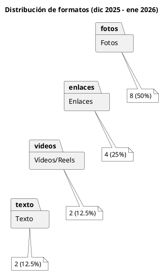
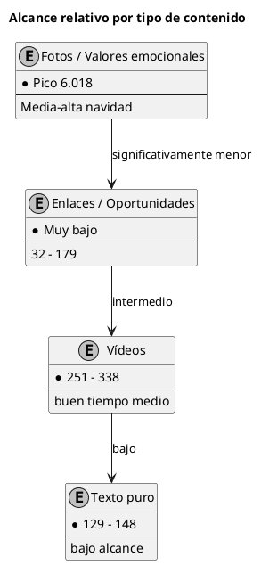

Informe mensual de Redes Sociales – Facebook
Fundación de los Boinas Verdes Roble y Machete (RyM)
Índice
- Metadatos del informe
- 1. Resumen ejecutivo
- 2. Qué se ha hecho en el periodo
- 3. Aspectos positivos
- 4. Aspectos negativos o áreas de mejora
- 5. Propuestas y recomendaciones para febrero 2026
- Gráficos descriptivos
- Referencias documentales y trazabilidad
- Próxima revisión recomendada : mediados / finales de febrero 2026
Metadatos del informe
- Periodo analizado
- 4 de diciembre de 2025 – 9 de enero de 2026
- Fuente de datos
- Exportación CSV desde Meta Business Suite / Facebook Insights
- Nombre del archivo original
- Dec-01-2025_Jan-10-2026_1307344194455114.csv
- Publicaciones analizadas
- 16
- Alcance total estimado
- ~12.644 usuarios únicos
- Interacciones totales (reacciones + comentarios + compartidos)
- 406
- Fecha de elaboración
- 15 de enero de 2026
- Preparado para
- Patronato, Junta Directiva y Área de Comunicación – Fundación de los Boinas Verdes RyM
1. Resumen ejecutivo
Durante el periodo navideño y de arranque de 2026 la página mantuvo una actividad regular con 16 publicaciones en ~36 días (≈0,44 publicaciones/día). Se logró un alcance orgánico total aproximado de 12.644 usuarios (media ~790 por publicación) y 406 interacciones directas.
El mes combinó mensajes emocionales de alta conexión (Navidad, Fin de Año, valores de hermandad y colaboración) con acciones sociales concretas (entrega de calzado) y comunicaciones institucionales (acuerdos, formación, historia). Destaca muy positivamente el post reflexivo sobre “La Colaboración” (6 ene) con más de 6.000 alcances, pero se observa fuerte dispersión: varias publicaciones de enero y algunas informativas/transaccionales cayeron por debajo de 100–200 alcances.
Valoración general: La comunidad responde muy bien a contenidos de valores, orgullo de cuerpo y acción social cercana. Sin embargo, los anuncios de oportunidades concretas (empleo, formación, beneficios) y el periodo post-navideño muestran fatiga o menor prioridad algorítmica. Existe potencial importante en vídeo/reel y en mejorar el storytelling emocional alrededor de las comunicaciones más “técnicas”.
2. Qué se ha hecho en el periodo
Tipos de contenidos principales
- Acciones solidarias visibles (entrega de zapatos Cáritas / Centro CASA)
- Mensajes institucionales navideños y de Fin de Año
- Comunicación de acuerdos y beneficios para beneficiarios (fisioterapia Kinetic, Hotel Bonalba)
- Contenido cultural e histórico (conferencia Cartagena de Indias, 64º aniversario UOEs)
- Promoción de formación universitaria (minicredencial UA – Liderazgo Estratégico)
- Lanzamiento / recuerdo del bazar solidario navideño
Distribución por formato
- Imagen / foto estática → 8 (50%)
- Enlace externo → 4 (25%)
- Vídeo / Reel → 2 (12,5%)
- Texto puro → 2 (12,5%)
Frecuencia Mayor densidad entre el 19 y 31 de diciembre (Navidad y cierre de año). Enero muestra menor ritmo y menor respuesta.
3. Aspectos positivos
- Post “La Colaboración: el regalo más valioso” → 6.018 alcances + 83 interacciones (muy por encima de la media)
- Publicaciones de entrega de calzado navideño → buen engagement relativo (75–88 reacciones)
- Vídeos cortos, aunque pocos, muestran tiempo de visualización aceptable (~5,7–11,3 s de media)
- Mantenimiento de presencia en fechas clave (Navidad, Año Nuevo, aniversario UOEs) → refuerza sentimiento de pertenencia
4. Aspectos negativos o áreas de mejora
- Fuertes caídas de alcance en publicaciones de enero (varias < 100–200 usuarios)
- Acuerdo Kinetic Fisioterapia (9 ene) → solo 32 alcances
- Publicaciones transaccionales / informativas (formación UA, bazar, ofertas laborales) → muy bajas interacciones (0–5)
- Escasa conversación generada (solo 44 comentarios en 16 publicaciones)
- Uso testimonial de vídeo/reel (solo 2 publicaciones)
5. Propuestas y recomendaciones para febrero 2026
- Incrementar publicación de vídeo/reel corto (objetivo: 4–6 al mes)
- Testimonios breves de beneficiarios
- “Así preparamos la entrega de hoy”
- Resúmenes valores con música emotiva
- Envolver toda comunicación informativa en micro-storytelling Ejemplo: “Después de años de dolor de espalda, Pedro volvió a jugar con sus nietos gracias al acuerdo con Kinetic…”
- Reforzar CTA claras y personales
- “Guarda este post si conoces a alguien que lo necesite”
- “Etiqueta a un compañero boina que debería verlo”
- “Comparte si crees que ningún veterano debe quedarse atrás”
- Ritmo recomendado: 3–4 publicaciones semanales de alto componente emocional + 1 informativa bien narrada
- Activar conversación
- Preguntas más íntimas y directas
- Responder todos los comentarios en <24 h
- Mini-serie de captación “5 razones para sumarte a RyM en 2026” (carrusel o reel) → cada entrega enlaza a formulario de socio/donante
Gráficos descriptivos
Distribución de formatos publicados
Distribución de formatos publicados (4 dic 2025 – 9 ene 2026)**

Alcance relativo por tipología (aproximado)

Referencias documentales y trazabilidad
- Archivo de datos brutos
Dec-01-2025_Jan-10-2026_1307344194455114.csv- URL página oficial
- https://www.facebook.com/fundaciondelosboinasverdesrym
- Web Fundación
- https://boinasverdes.es
- Canal WhatsApp oficial
- Fundación RyM Oficial
- Metodología
- Cálculo manual a partir de métricas CSV exportadas (no incluye alcance pagado ni cruces con otras plataformas)
Próxima revisión recomendada : mediados / finales de febrero 2026
Fin del informe – Enero 2026